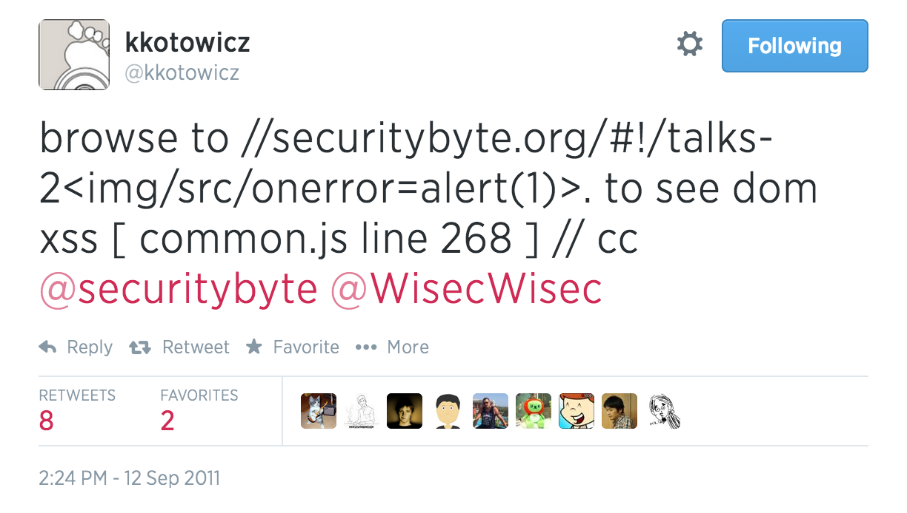
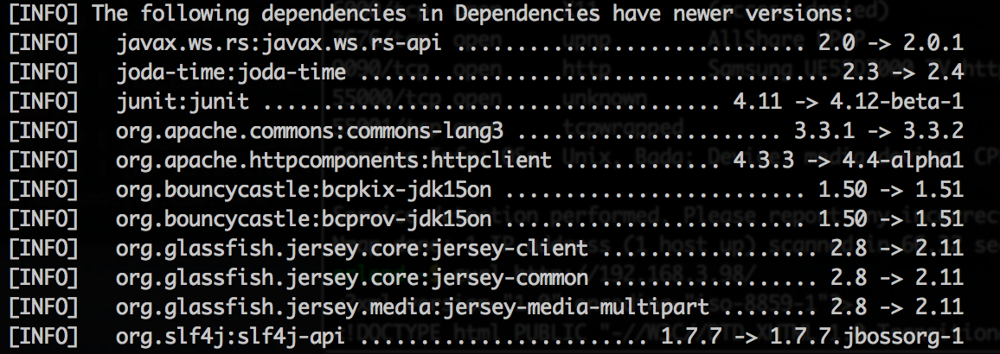

- I write code and I like to hack stuff
- Head of the security competency group at BEKK
- OWASP Norway Chapter lead
- Member of Norwegian Honeynet Project
- Twitter: @webtonull
Is your computer up to date?
Is your web application up to date?
4817504d069b4c5082161b02a22116ad75f822b1
Sat, 31 Dec 2011 22:59:57
PR: 2658
Submitted by: Robin Seggelmann <seggelmann@fh-muenster.de>
Reviewed by: steve
Support for TLS/DTLS heartbeats.
Most web sites are using the jQuery version available when the site was first built
New in Top 10 2013, but earlier mentioned in 2010-A6: Security Misconfiguration
| Threat Agents | Attack Vectors | Weakness Prevalence | Weakness Detectability | Technical Impacts | Business Impacts |
|---|---|---|---|---|---|
| App Specific | AVERAGE | WIDESPREAD | DIFFICULT | MODERATE | App / Business Specific |
Maven is a DSL for downloading the Internet
$("#" + user_provided_value)
$(location.hash)
/#!%22%3E%3Cimg%20src=1%20onerror=alert%281%29;%3E/
http://example.com?foo[0][100]=bar
| CVE-2014-0116 | ...allows remote attackers to "manipulate" the ClassLoader and modify session state via a crafted request. | 5.8 |
| CVE-2014-0114 | ...allows remote attackers to "manipulate" the ClassLoader and execute arbitrary code... | 7.5 |
| CVE-2014-0113 | ...allows remote attackers to "manipulate" the ClassLoader and execute arbitrary code via a crafted request. | 7.5 |
| CVE-2014-0112 | ...allows remote attackers to "manipulate" the ClassLoader and execute arbitrary code via a crafted request... | 7.5 |
| CVE-2014-0094 | ...allows remote attackers to "manipulate" the ClassLoader via the class parameter... | 5.0 |
| CVE-2013-6348 | Multiple cross-site scripting (XSS) vulnerabilities... | 4.3 |
| CVE-2013-4316 | ...enables Dynamic Method Invocation by default, which has unknown impact and attack vectors. | 10.0 |
| CVE-2013-4310 | ...allows remote attackers to bypass access controls... | 5.8 |
| CVE-2013-2251 | ...execute arbitrary OGNL expressions... | 9.3 |
| CVE-2013-2248 | ...redirect users to arbitrary web sites... | 5.8 |
| CVE-2013-2135 | ... execute arbitrary OGNL code... | 9.3 |
| CVE-2013-2134 | ...execute arbitrary OGNL code... | 9.3 |
| CVE-2013-2215 | ...execute arbitrary OGNL code... | 9.3 |
| CVE-2013-1966 | ...execute arbitrary OGNL code... | 9.3 |
| CVE-2013-1965 | ...execute arbitrary OGNL code... | 9.3 |
mvn versions:display-dependency-updates
http://ajax.googleapis.com/ajax/libs/jquery/1.5.1/jquery.min.js/*!
* jQuery JavaScript Library v1.5.1jQuery.fn.jquery
Handlebars.VERSIONUsage: retire [options]
Options:
-p, --package limit node scan to packages where parent is mentioned in package.json (ignore node_modules)
-n, --node Run node dependency scan only
-j, --js Run scan of JavaScript files only
-v, --verbose Show identified files (by default only vulnerable files are shown)
-x, --dropexternal Don't include project provided vulnerability repository
-c, --nocache Don't use local cache
--jspath <path> Folder to scan for javascript files
--nodepath <path> Folder to scan for node files
--path <path> Folder to scan for both
--jsrepo <path> Local version of repo
--noderepo <path> Local version of repo
--proxy <url> Proxy url (http://some.sever:8080)
--ignore <paths> Comma delimited list of paths to ignore
BEKK has published our view on the current state of technology in our Technology Radar.
In this radar we present what you should use, consider or refrain from grouped by "Architecture and platform", "Process and quality", "Frontend and mobile" and "Languages and frameworks"
open.bekk.no/bekk-teknologiradar-mai-2014
radar.bekk.no/techradar